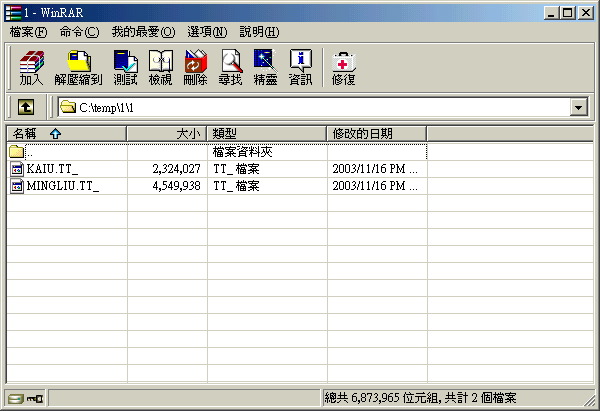
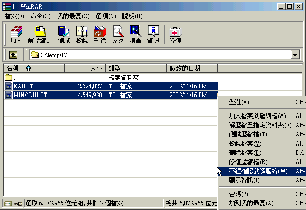
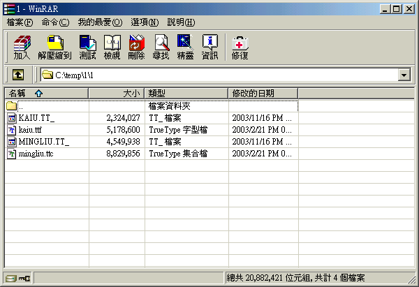

NEWTTF.INF
※WinME 必需事先移除「系統檔案保護」，否則會裝不進去喔。詳見此 link：
http://leoboard.cpatch.org/cgi-bin/topic.cgi?forum=21&topic=72&start=9&show=0
用 WinRAR 的「瀏覽功能」看 *.tt_ 存放目錄。在此以 Server 2003 內附字型為例。

用 WinRAR 的「不經確認就解壓縮」將此兩字型檔解壓。

解壓完畢的畫面。

已經裝完 Unicode 補完計畫 2.30 的 98se，舊版測試頁缺字 (1/2)。

已經裝完 Unicode 補完計畫 2.30 的 98se，舊版測試頁缺字 (2/2)。

將我們提供的 NewTTF.inf 與這些字型檔放在一起，對 NewTTF.inf 按右鍵選安裝。

NewTTF.inf 安裝中畫面。

裝完會要求「重新開機」，請按「是」重新開機。

已經更新完字型的 98se，舊版測試頁畫面 (1/2)。

已經更新完字型的 98se，舊版測試頁畫面 (2/2)。

已經正確安裝完 Unicode 補完計畫 2.30 以上版本的 Windows XP，新版測試頁畫面。